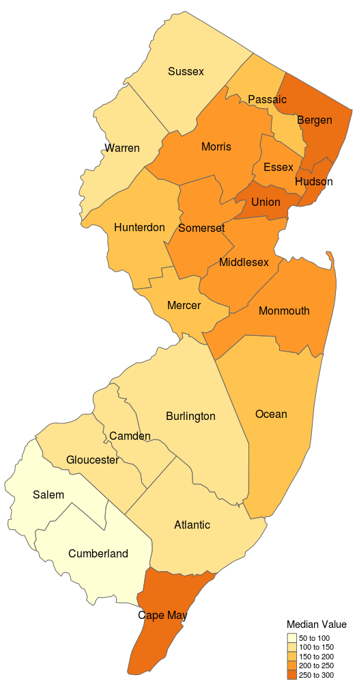
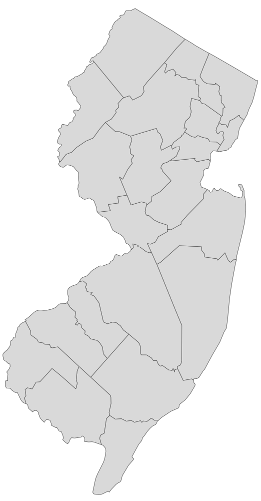
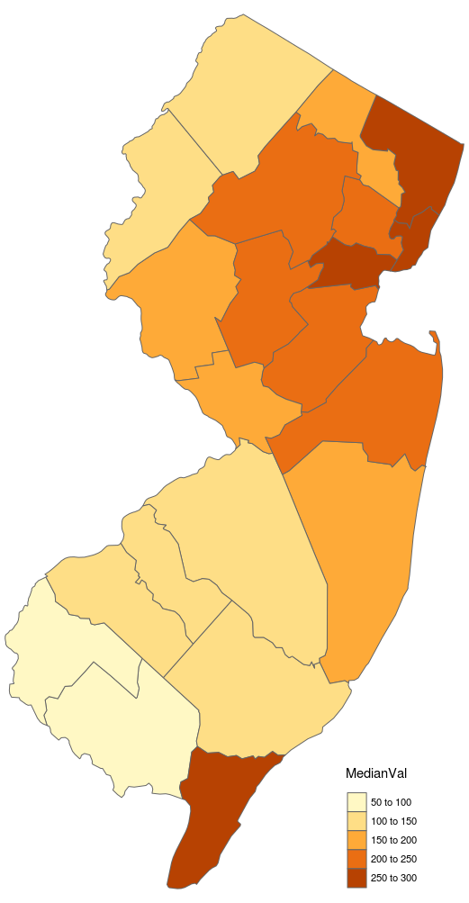

A choropleth map is a thematic map in which areas are colored in relation to a data variable being displayed on the map, such as population density. In this tutorial we will display median home value per square foot in the state of New Jersey. The final map will look like this:
We will need two pieces of data:
The shapefile format is a popular geospatial vector data format for geographic information systems (GIS). It is developed and regulated by Esri (Environmental Systems Research Institute).
You can download free shapefiles from census.gov web site. I chose the national county file cb_2017_us_county_5m.zip containing state and county data. The zip file contains multiple files. Extract them in some directory, such as, /data/cb_2017_us_county_5m/.
You can get this information from Zillow Research web site. I downloaded the following CSV file, County_MedianValuePerSqft_AllHomes.csv.
To read a shapefile and draw a map we will need following libraries. Make sure they are properly installed on your system.
Let us load national county shapefile, extract New Jersey data and draw the map.
The map should look like this:
We used sf library to load national county shapefile from /data/cb_2017_us_county_5m/ folder into sf_us variable. The structure of sf_us variable is similar to a conventional data frame. It contains data for all states.
The state information is stored in "STATEFP" column as a FIPS code. The FIPS code for New Jersey is 34. County names are stored in "NAME" column and geodata is stored in "geometry" column.
Extracting geodata for New Jersey is similar to subsetting any other type of data in R. We selected two columns, "NAME" and "geometry" and all rows with FIPS code 34. We also renamed "NAME" column to "County".
Finally we used qtm() API from tmap library to create the map.
First, let us read CSV file and extract data for New Jersey. The file contains historical data for all states. We will extract only two columns, "RegionName" with county names and "X2018.07" which has median home values in July 2018. We will also rename "RegionName" to "County" and "X2018.07" to "MedianVal"
Now we have to merge data from two datasets, sf_nj and hval_nj by key "County". We will use append_data() API from tmaptools library. This operation is similar to a join of two database tables.
Now we can create a simple choropleth map.
The map should look like this.
Finally, let us add county names and customize colors.
Now the map should look like this: